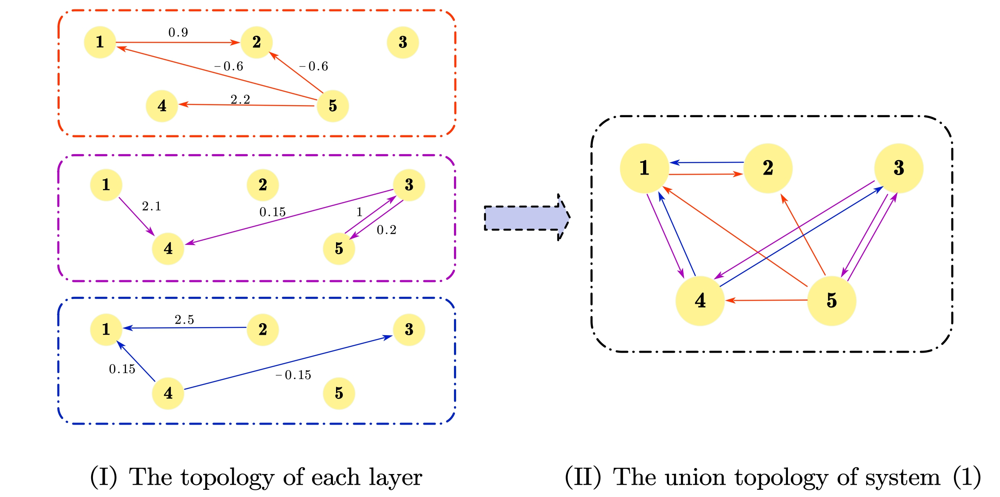
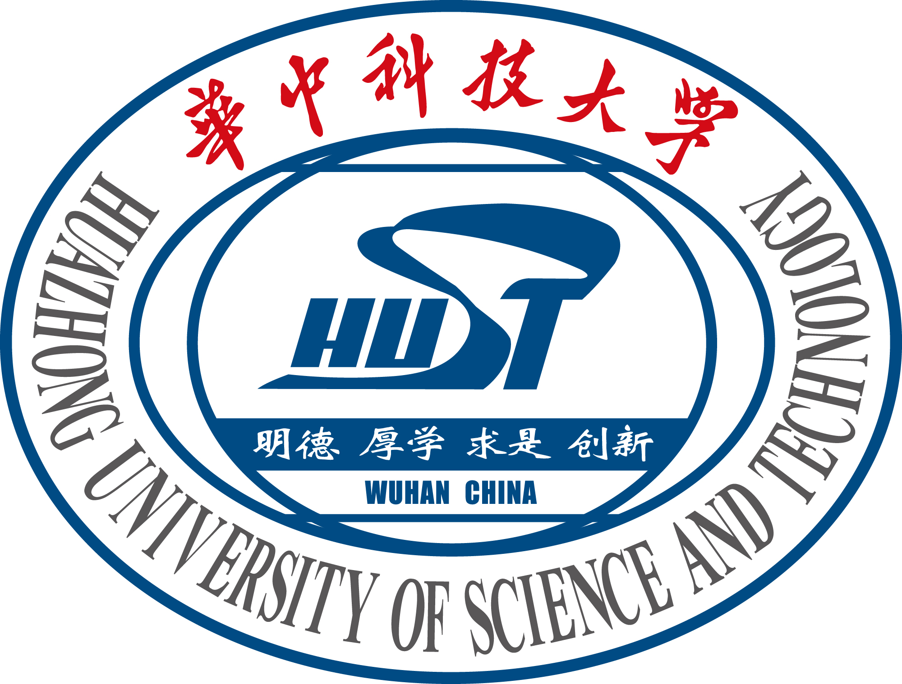

Biography
I am a 4th-year undergraduate in Mathematics at Xinjiang University (XJU, 新疆大学) with GPA ranking 1/289. In 2026, I will join the School of Artificial Intelligence and Automation (AIA, 人工智能与自动化学院) at Huazhong University of Science and Technology (HUST, 华中科技大学), advised by Prof. Zhigang Zeng (IEEE Fellow).
My research interests span Multimodal Large Language Models, MLLM Agent, World Models, and Embodied Intelligence. I enjoy problems that connect mathematical theory with trustworthy intelligent systems, and look forward to artificial general intelligence.
I am open to collaboration and always happy to discuss research ideas by e-mail.
News
- [2026/01/07] Our paper 'Spatial Sampling-based Passivity and Synchronization of Multiweighted Coupled Reaction-diffusion Neural Networks' has been accepted by CNSNS.
- [2025/09/01] Our paper 'Adaptive Passivity-based Synchronization of Spatiotemporal Neural Networks with Multi-weighted Coupling under Spatially Point Measurements' has been accepted by CISC 2025.
Selected Publications
-
HaM-World: Soft-Hamiltonian World Models with Selective Memory for Planning * Equal contribution; † Corresponding authors. arXiv:2605.05951, 2026 [PDF] [arXiv] [Code]
-
Spatial Sampling-based Passivity and Synchronization of Multiweighted Coupled Reaction-diffusion Neural Networks Communications in Nonlinear Science and Numerical Simulation (CNSNS, JCR Q1, 中科院1区), 2025 [DOI] [PDF]
-

Adaptive Passivity-based Synchronization of Spatiotemporal Neural Networks with Multi-weighted Coupling under Spatially Point Measurements Chinese Intelligent Systems Conference, 2025
Education
-

-
Research & Industry Experience
Selected Projects
-
Jackal-DreamerV3 Navigation [GitHub] Keywords: DreamerV3, ROS2, JAX, RealSense, ArUco, ZeroMQ Built a real-robot multi-target indoor navigation workflow on Clearpath Jackal, covering keyboard data collection, offline training, reward/perception design, and pure inference deployment.
-
Go1-DreamerV3-WTW [GitHub] Keywords: DreamerV3, Walk These Ways, Unitree Go1, Isaac Gym, LCM Integrated DreamerV3 as a high-level gait/style adaptation policy over the Walk These Ways low-level controller, with training/deployment scripts and real-robot bring-up utilities.
Honors and Awards
- National Scholarship (国家奖学金), 2025
- Merit Student Pacemaker (三好学生标兵), 2025
- Meritorious Winner, American Mathematical Contest in Modeling (美国大学生数学建模竞赛 M 奖), 2025
- First Prize (Provincial), Chinese Mathematical Contest (全国大学生数学竞赛省一等奖), 2024
- Academic Excellence Scholarship, Xinjiang Uygur Autonomous Region (学业优秀奖学金), 2024